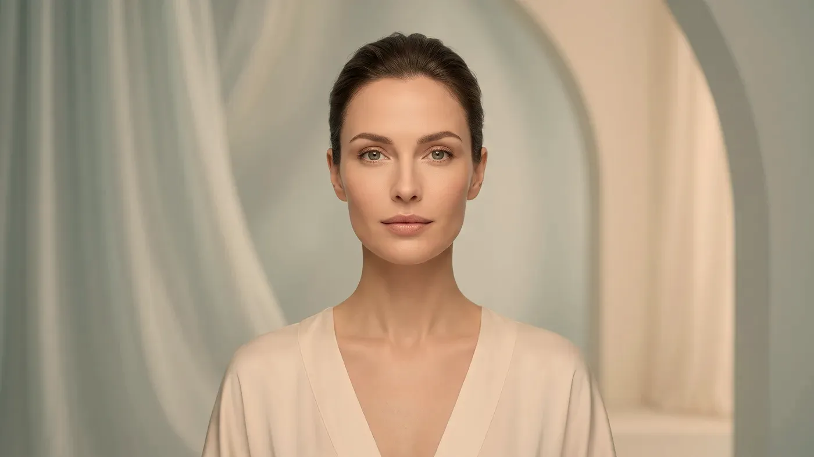
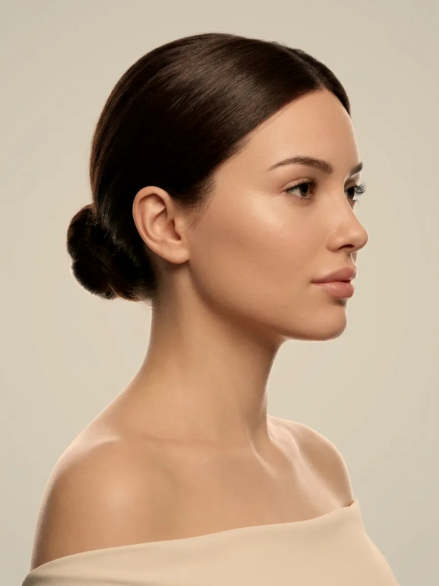

Bölgeler · Yüz
Tek bir çizgiye değil, yüzün bütününe bakılır.
Alın, elmacık ve çene hattı ayrı bölgeler gibi görünse de birbirine yaslanır. Orta yüze eklenen destek ağız kenarının görünümünü, alt yüzdeki bir değişiklik ise yüzün genel oranını etkiler. Muayenede önce değişimin hangi katmanda olduğu ayrılır, ardından bir basamağa gerçekten ihtiyaç olup olmadığı konuşulur; kimi zaman varılan karar hiçbir işlem yapmamaktır.

Görsel yapay zekâ ile üretilmiştirYaklaşım
Yüzde neden tek bir bölgeye bakarak karar verilmez?
Başvuruların büyük kısmı tek bir ayrıntıyla gelir: kaşların arasındaki derin çizgi, ağız kenarında beliren gölge ya da yanakta fark edilen düzleşme. Muayenede bu ayrıntıya odaklanmadan önce bir adım geri çekilip yüzün tamamına bakılır, çünkü bölgelerin hiçbiri ötekilerden bağımsız değildir.
Bir bölgedeki değişim komşusuna yansır
Elmacık hattında desteği artıran bir basamak, ağız kenarına hiç dokunulmadan oradaki gölgeyi hafifletebilir. Tersine, yalnız çene ve dudak çevresine yoğunlaşan bir plan alındaki ve şakaktaki değişimi daha çok öne çıkarabilir. Karar bu nedenle tek bir bölgenin görünümüne dayandırılmaz.
Amaç yeni bir yüz değil, sizin yüzünüz
Yaşla gelen değişim yüzün birkaç noktasında aynı anda ama farklı hızlarda ilerler. Örneğin yalnızca ağız kenarındaki gölgeye yüklenmek, orada bir düzelme sağlasa bile yanağın ve çenenin oranlarıyla çelişen bir görünüm bırakabilir. Planın ölçüsü, kişinin mevcut hatlarının ve ifadesinin korunmasıdır.
Bir adımın sonucu görülmeden ikincisine geçilmez
Plan yazılırken hangi basamağın önce geleceği, hangisinin bekleyebileceği ve hangisine hiç gerek olmadığı baştan belirlenir. Birden çok başlık aynı seansa toplanmaz; önceki adımın etkisi oturduktan sonra sıradaki konuşulur. Böylece görülen değişimin hangi adımdan geldiği de izlenebilir kalır.
Anatomi
Yaş aldıkça yüzün hangi katları değişir?
Zamanla değişen tek bir yapı yoktur; deri, yağ bölmeleri, mimik kasları ve kemik iskelet birlikte etkilenir. Şikâyetin kaynağı olan kat belirlenmeden uygun basamak seçilemez.
Deri ve yüzey kalitesi
Derinin su bağlama gücü ve kolajen ağının düzeni yıllar içinde zayıflar; yüzey matlaşır, ince çizgiler kalıcı hâle gelir. Bu katta hacim eklemek bir çözüm sunmaz; cilt kalitesine yönelik uygulamalar ve düzenli güneş koruması öne çıkar.
Yağ bölmeleri
Yüzdeki yağ dokusu kesintisiz bir tabaka değil, sınırları belli bölmeler hâlindedir. Bu bölmelerin bir kısmı zamanla incelir, bir kısmı ise aşağı kayar. Şakakta çöküklük, elmacıkta düzleşme ve ağız kenarındaki gölge çoğunlukla bu kaymanın sonucudur.
Mimik kasları
Gülme, kaş kaldırma ve göz kısma gibi hareketler yıllarca tekrarlandıkça deride iz bırakır. Çizginin yalnız hareket sırasında mı belirdiği, yoksa yüz dinlenirken de mi durduğu, seçilecek yolu doğrudan değiştirir.
Kemik iskelet
Kemikteki değişim yavaş ilerler ama etkisi büyüktür: göz çukurunun kenarları genişler, çene köşesi belirginliğini yitirir. Desteğin kemik düzeyinde azaldığı bir tabloya yüzeysel bir işlemle yanıt verilemez; bu ayrım muayenede yapılır.
Denge
Yüzün üç katı birbirini nasıl etkiler?
Alın ve kaşlar yüzün ifadesini, elmacık ve yanak onu taşıyan desteği, çene ve dudak çevresi ise alt kenarı oluşturur. İncelemeye çoğu zaman ortadaki destekten başlanır; üstteki ve alttaki bölgelerin nasıl göründüğü büyük ölçüde oraya bağlıdır.

Görsel yapay zekâ ile üretilmiştirAlın, kaş ve şakak
Bu bölgede belirleyici olan kas etkinliğidir; alındaki yatay çizgiler ve iki kaş arasındaki dikey çizgi en sık dile getirilen şikâyetlerdir. Şakakta hacim azaldığında üst yüz daralmış ve yorgun görünür. Buradaki her müdahale kaşın yüksekliğini ve kavisini değiştirebileceği için doz ve uygulama noktaları sınırlı tutulur.
Elmacık, yanak ve göz altı geçişi
Orta yüz, üstündeki ve altındaki bölgelere destek veren kattır. Burada hacim azaldığında etkisi iki yönde görülür: göz altında gölge, ağız kenarında belirginleşen kıvrım. Alt yüzden yakınan birinde ilk incelenen yerin çoğu zaman elmacık hattı olması bundandır.
Ağız çevresi, çene ucu ve çene hattı
Yüzün alt kenarı ne kadar net görünüyor? Bu bölgede sorulan asıl soru budur. Dudak köşelerinden aşağı uzanan çizgilere, çene ucunun ne kadar öne çıktığına ve kulak önünden çeneye uzanan hattın keskinliğine birlikte bakılır. Çene hattını ve dudağı ayrıntılı olarak kendi sayfalarında ele aldık.
Seçenekler
Yüz planına hangi uygulamalar girebilir?
Listede yüz planına girebilecek seçenekleri bir arada görüyorsunuz. Bunlar birlikte satılan bir set değildir; çoğu kişide yalnızca bir ya da ikisi gerekir, bazılarında hiçbiri. Hangisinin size uyduğu muayeneden sonra netleşir.
Botulinum toksin
Mimik çizgisiBirkaç gün→Dolgu uygulamaları
Hacim desteğiBirkaç gün→Sıvı yüz germe
Bütüncül destekMuayenede belirlenir→Biyostimülan uygulamalar
Doku desteğiMuayenede belirlenir→Gençlik aşısı (skinbooster)
Cilt kalitesiMuayenede belirlenir→Mezoterapi
Cilt kalitesiMuayenede belirlenir→Fraksiyonel lazer
YüzeyMuayenede belirlenir→HIFU
SıkılaştırmaMuayenede belirlenir→Altın iğne radyofrekans
SıkılaştırmaMuayenede belirlenir→
Botulinum toksin
Hareketle beliren çizgilerde değerlendirilir; önce çizginin yalnız mimik sırasında mı ortaya çıktığı ayrılır.
Sayfasına git →Süreç ve uygunluk
Muayenede yüz planı nasıl çıkarılır?
- Şikâyet ve beklenti. Aynada sizi en çok neyin rahatsız ettiğini anlatarak başlarsınız; beklentiniz uygulamaların ulaşabileceği noktanın ötesindeyse bunu ilk görüşmede açıkça konuşuruz.
- Katların tek tek incelenmesi. Derinin durumu, yağın nereye kaydığı, hangi kasların fazla çalıştığı ve kemiğin ne kadar destek verdiği ayrı ayrı yazılır; yüzünüze hem sakinken hem de gülerken, kaş kaldırırken bakılır, sağ ve sol taraf karşılaştırılır.
- Sağlık öyküsü. Daha önce yapılmış işlemler, kan sulandırıcı ilaçlar, bağışıklık sistemi hastalıkları, gebelik ya da emzirme, yakın dönemde geçirilen enfeksiyon veya diş tedavisi sorulur; bilinen aşırı duyarlılıklarınızı belirtin.
- Önceliklerin sıralanması. Çoğu planda destek ve cilt kalitesi öne, çizgiye yönelik adımlar sona alınır; gereksiz görülen basamak da bu aşamada açıkça söylenir.
- Bilgilendirme, onam ve kontrol. Neyin amaçlandığını ve hangi istenmeyen durumların görülebileceğini yazılı olarak alırsınız; onamınız olmadan işleme başlanmaz. Kontrol tarihi, şişliğin inmesine zaman tanıyacak biçimde seçilir.
"Bir yüzü başka bir yüze benzetmeye çalışmayız; sahibinin hatlarını korumaya çalışırız."
Uygulama yapılmayan durumlar
- Gebelik ve emzirme süreci
- İşlem yapılacak alanda uçuk, aktif enfeksiyon ya da iltihaplı sivilce
- Kullanılacak ürünün içeriğine karşı bilinen aşırı duyarlılık
- Uygulamanın sağlayabileceğinin ötesinde bir sonuç beklentisi
- Belirgin deri fazlalığı nedeniyle cerrahi değerlendirme gerektiren tablolar
Ertelenen ya da ayrıca planlanan durumlar
- Kan sulandırıcı ilaç kullanımı veya pıhtılaşma sorunu
- Yakın dönemde geçirilen enfeksiyon, yapılan aşı ya da diş tedavisi
- Kontrol altına alınmamış otoimmün hastalık
- Aynı bölgeye daha önce uygulanmış, içeriği bilinmeyen ürün
- Alevlenmiş akne ya da tahriş olmuş, bariyeri zayıflamış cilt
İşlem gününden sonra genellikle şunları isteriz: ilk gün yüzünüze bastırmamanız ve ovmamanız, birkaç gün sauna, hamam ve ağır spora ara vermeniz, güneş koruyucuyu bırakmamanız ve kontrol gününe gelmeniz. Uygulamaya göre değişen ayrıntılar için uygulama sonrası takip sayfasına bakabilirsiniz.
Cildiniz çabuk kızarıyor ve tahriş oluyorsa işlemden önce bariyerin toparlanması beklenir; ilk adım kullandığınız ürün sayısını azaltmaktır. Cildinizin eğilimine kabaca bakmak için cilt tipi testi yol gösterebilir. Hangi işlemleri yapmadığımızı ve bu durumda sizi nereye yönlendirdiğimizi ayrı bir sayfada topladık.
İşlemden sonra sizi tedirgin eden bir değişiklik olursa ilk olarak bizi 0539 933 08 08 numarasından arayın. Dinmeyen ve giderek artan ağrı, derinin bembeyaz olması ya da morumsu bir ağ görünümü alması, bulanık görme, hızla kabaran şişlik ya da ateş gibi durumlarda vakit kaybetmeyin; telefonla ulaşamazsanız 112’yi arayın veya size en yakın acil servise gidin.
Soru–cevap
Aklınızdaki soruyu seçin, yanıtı yanda okuyun
Sonraki adım
Yüzünüzü bir bütün olarak değerlendirelim
Cevizlik Mah. Ebuzziya Cad. No:47/1, Bakırköy / İstanbul — muayenede önce değişimin hangi katmandan kaynaklandığını ayırıyor, ardından bir adıma gerçekten ihtiyaç olup olmadığını birlikte konuşuyoruz.
Bu içerik Uzm. Dr. Rahmi Cebeci (Aile Hekimliği Uzmanı · Medikal Estetik Sertifikalı) tarafından hazırlanmış ve tıbbi doğruluk yönünden denetlenmiştir.
Bu sayfadaki bilgiler genel bilgilendirme amaçlıdır; tanı veya tedavi önerisi niteliği taşımaz ve hekim muayenesinin yerine geçmez. Sonuçlar kişiden kişiye değişiklik gösterebilir.